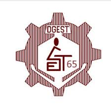
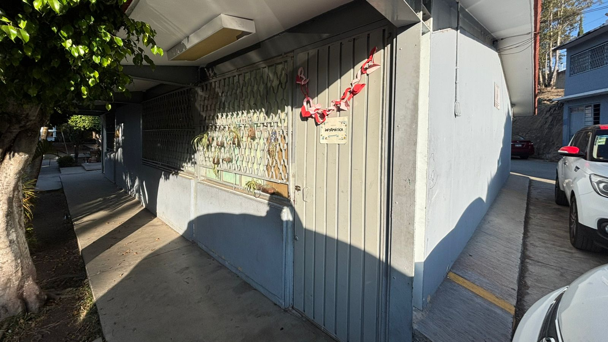

Taller de Informática
En la secundaria técnica, la asignatura de técnologias en el áera de Informática tiene como proposito en que el alumno comprenda, utilice y transforme la tecnología digítal de manera critica, ética y creativa, La Tecnología de Informática no se limita al uso de la computadora; se enfoca en el analisís de procesos técnicos, la solución de problemas reales con el contexto y desarrollo de proyecto con impacto social y comunitario.
¿Qué es la Tecnología Informática?

Origen del proyecto
Este proyecto nació hace tres años en el taller de informática, como una página web educativa para apoyar el aprendizaje práctico.
Con el tiempo, evolucionó hacía una plataforma comunitaria interdiciplinaria, donde se muestran evidencias reales de aprendizaje. Apoyado por el taller de informática gracias a la Profra. Leonor Vazquez Cortés
En colaboración y elaborado por:
Generación 2021-2024
Generación 2022-2025
Generación 2023-2026
A continuación podras hacer click en alguno de los siguientes conceptos de informática para saber más acerca de que se trata, un pequeño cuestionario para poner a prueba tus conocimientos, trabajos que realizamos
Información sobre Hardware
Información sobre software
Contesta el cuestionario
Juega para que te relajes